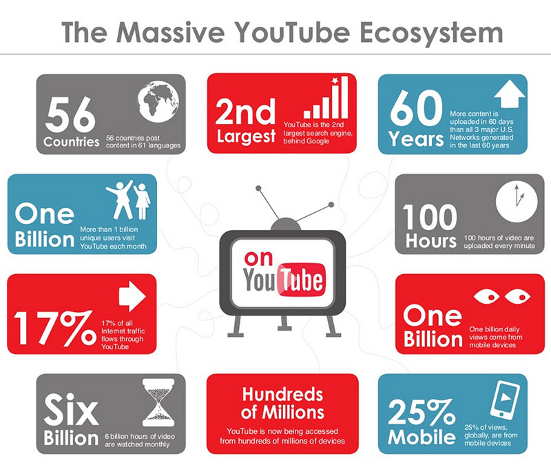
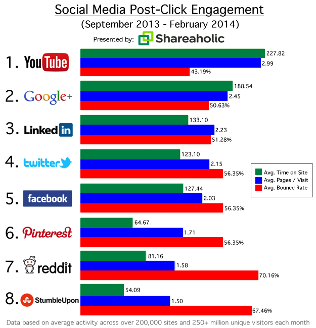

YouTube is perhaps the largest and most popular video streaming website in the world. It allows users to enjoy videos and the ability to upload and share original content. The company is based in San Bruno, California and was founded by former PayPal employees in February 2005. However, it was later sold to Google in November 2006 for $1.65 billion. Youtube gains hundreds of millions of video views per day and still continues to rapidly grow. According to the first visual below, it is also reported that about 100 hours of video is uploaded every minute and more than 350 million devices use YouTube. The second visual below shows YouTube being the number one site to drive the most engagement with higher pages per visit and longer duration as oppose to websites such as Facebook and Twitter (Cohen, 2014). How does YouTube manage all this? Apache is used hand in hand with the Python App Server to return a webpage to the user. The Python programming language succeeds in handling scalability concerns and development speeds too(Hoff, 2008). Python is sped up using psyco, a “just in time” compiler for Python that compiles term pieces of code into C. For instance, encryption on YouTube is written in C extensions in order to take advantage of Python as well as the speed of C. MySQL retrieves data every time a video is being watched (Hoff, 2012). There are a few issues when it comes to serving video however, such as bandwidth costs, hardware costs and power consumption. Each video is hosted by a “mini-cluster”, a small number of machines in each cluster that serve the exact same said of videos in order to improve scalability and headroom in case one machine goes down. Instead of Apache, Lighttpd is now used, an open source web server that allows YouTube to pull large number of file descriptors (GoogleTalksArchive, 2012). As far as the CDN system, the most popular video content is placed in the CDN and the rest are placed in the YouTube servers. As far as deploying code to the web, Google Developers contains several API’s with guides and support for YouTube and it's other services. Some YouTube open source projects are also pushed to GitHub.
 Cohen, David. (2014). STUDY: YouTube Pummels Facebook In Post-Click Engagement. SocialTimes. Retrieved from http://www.adweek.com/socialtimes/shareaholic-post-click-engagement/433763
GoogleTalksArchive. (2012). Seattle Conference on Scalability: YouTube Scalability. Retrieved from https://www.youtube.com/watch?v=w5WVu624fY8
Hoff, Todd. (2008). YouTube Architecture. High Scalability. Retrieved from http://highscalability.com/youtube-architecture
Hoff, Todd. (2012). 7 Years Of YouTube Scalability Lessons In 30 Minutes. High Scalability. Retrieved from http://highscalability.com/blog/2012/3/26/7-years-of-youtube-scalability-lessons-in-30-minutes.html